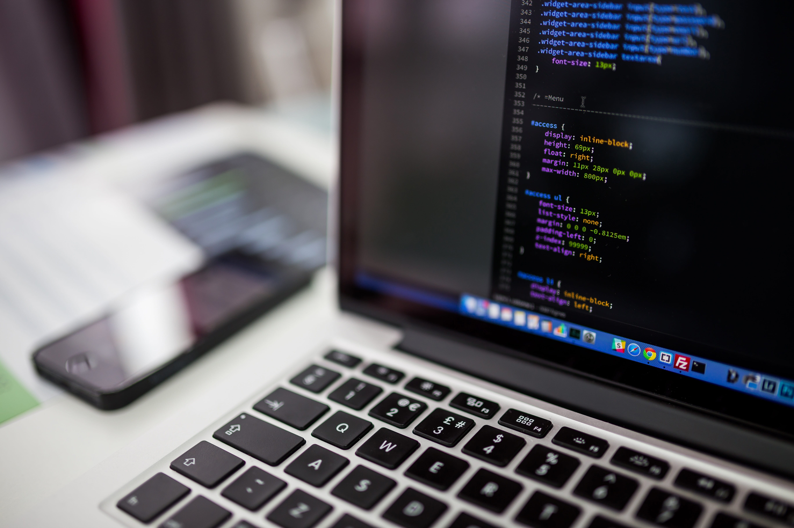

My Journey Learning Web Development
From confusing tags to my first Bootstrap framework project for my resume.
Read more →
Notes from learning HTML, CSS, Bootstrap, and balancing college with work.
From confusing tags to my first Bootstrap framework project for my resume.
Read more →How I stay focused when work and classes both demand energy.
Read more →From childhood game ideas to web, software, and game development goals.
Read more →
When I first started learning HTML, everything looked confusing.
I did not understand how tags worked or how a website was structured.
After practicing step by step, I slowly began to understand how HTML and CSS work together.
This project helped me realize that building a website requires patience and logical thinking.
However, this is my first framework project, and I can include it in my resume.
If you have any questions, feel free to contact me.
As a college student, balancing work and study has been challenging. Sometimes I feel tired after work, but I remind myself of my goals. Managing my time carefully has helped me stay focused and continue improving my skills.
Since I was a child, I have dreamed of creating my own game. I want to develop something meaningful that people around the world can enjoy. My current goal is to become a Web Developer, and in the future, I hope to become a Software or Game Developer.